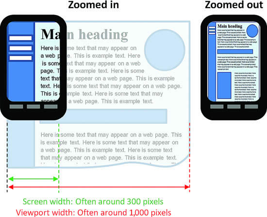
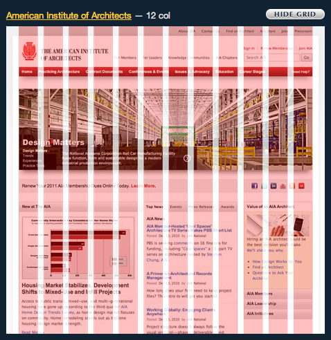

Lesson 6
Oh, the places you'll go
Development--and really all of life, in my opinion--is about looking downstream of where you're at right now and trying to put yourself in the best possible position for all possible futures. That's an incredibly clunky way to simply say that you don't know your content's future. You spend your life creating it, nurturing it, and getting it ready for the world, but once you put it out there you have no idea where it's going to end up, do you? Maybe it ends up on a desktop PC in the middle of Alaska across a ratty phone line. Maybe it finds it's way to an Android phone in Russia, piggybacking off the Wifi in the Kremlin. Or maybe to an iPad in the wilds of Australia via local cell tower. Or maybe--far, far into the future--it ends up on a holoscreen on Mars after bouncing off of 87 different satellites.
My point--albeit belabored--is that you want to make sure that your stuff looks as good to everyone else--no matter where, how, or on what device they're using--as it does to you when you originally created it.
In the past, this was insanely difficult because we were forced to use these adapted, ad-hoc methods in ways they were never meant to be used in an effort to control content. The results were fine, but as time as passed we've discovered that they are, largely, incapable and inadequate in the face of controlling content in the modern development landscape.
While controlling content can still be quite difficult, we do have a few new tricks up our sleeves.
Like water for content
Responsive Design
The dominant approach in modern web design to combat these issues is known as 'responsive design.' Users today have a myriad of choices in how they view web content--different web browsers, different screen sizes with different capabilities, etc. The idea is to build one website and then provide support for that one website across as many devices as possible, meeting the established standard for content, design, and performance to ensure overall usability and user satistfaction.
To help with this--and because I like tortured analogies--you should think of content like water.

Responsive web design is an extension of user interface plasticity, which is the capability of a user interface to withstand the system's physical characteristics (e.g. screen size, orientation, interaction method, etc.) and software capabilities (e.g. browser support, platform, connection method, etc.) while still preserving usability.
This has long been the standard in other areas of development, right? Think of PC gaming, for instance. Game developers really have no idea what kind of system you're going to be playing their game on. I mean, they have a general idea, but they have no clue as to the specific capabilities of your personal gaming PC, do they? So, they have to find a way to adapt their experience across a wide variety of systems from the incredibly capable (e.g. monster graphics cards on systems with high-end processors and lots of RAM) to those that aren't (e.g. low-end graphics cards on systems with mid-range processors and minimum amounts of RAM). Game developers--by and large--follow the methodology of 'graceful degredation.' The idea being that you develop for the monster system, but as the capabilities of the system lessen, so, too, does the experience. Draw distances are reduced, textures go low-resolution, dynamic shadow and lighting systems are shut down, etc. The game performs to the maximum capability of the system, keeping the core of the game experience (e.g. gameplay, narrative, etc.) in place, but downgrades the fidelity of that game experience to make sure the user experience remains positive.
In web design and development we take the antithesis approach and develop from the base experience up (i.e. progressive enhancement) for a number of reasons. The biggest one--at least, right now--is the collective shift of web content consumerism to mobile. For you see, mobile is king - mobile traffic accounts for more than half of all traffic on the internet and is growing...a lot...and quickly. Phones--by and large--aren't as capable as other platforms (e.g. smaller screens, less powerful hardware, etc.), so, it makes sense to develop your content with them in mind as they will, most likely, be the ones looking at your stuff.
To that end, the current methodology is to develop 'mobile first,' which means you build for smaller screens and low capability and then work your way up. Mobile has the most limitations so it forces you to take a good, long, hard look at your content to decide what's important and what's not, right? Sizzle is good, pretty is great, but if the core content is junk, then people aren't going to stick around for the show.
Once you have that base experience designed, it's easier to translate that--and add additional functionality--to your content for larger and more capable devices.
Sites designed with responsive web design principles adapt to the environment on which it is being accessed or displayed by adhering to a few key principles:
- fluid grid concept - the page is often divided into sections or 'grids,' each of a determinate size, which allows for ease of manipulation and movement as the display size changes.
- Relative values - The 'grid' and all elements on the page use relative elements like percentages, em / rem, and vh / vw rather than absolute values like pixels or points.
- media queries - allow for automatic--and specific--movement of content based on characteristics of the display device, usually screen size or width of the browser window.
Theory is great, but the 'how' is why you're here, so, let's get to it. There are a number of things we can do right out of the gate to make our site more responsive. The general idea is to build for flexibility. This website, for instance, doesn't use a whole lot 'responsive-centric' design elements, but if you resize it, you'll see that--while it isn't perfect--it does scale pretty well (the 'back to top' floating link is problematic because of its absolute positioning). I'm using Bootstrap, which is an HTML, CSS, and JavaScript framework (we'll definitely talk about them later), to build a very basic column setup, and then using a number of CSS rules to keep everything as flexible as I can.
Images
First, I want to address images. Images can--and do--break a site layout fast when that site is resized. Images--by and large--come in a wide variety of sizes and formats, which makes accommodation of them particularly troublesome. As a rule of thumb, we want the maximum size of the image when displayed to be 100% of the actual size of the image. This prevents smaller images from being blown up and pixelated on larger screens. On the other hand, we also don't want our larger images to take over a disproportionate amount of screen real estate and push all other content out, so, we need some way to reign them in a bit.
The ideal way is to control the container in which that image is displayed. In this case, the <img> element itself.
img { width:100%; }
For larger pictures, this works great. The image will always take up 100% of the <img> element. The <img> element, in turn, is constrained by its parent element, right? In our example below it's the <body> element. So, when you resize, the <body> element resizes and, so, too, does the <img> element. It's not ideal as regardless of whatever size the image is actually displayed, the browser downloads the full size image to do it, increasing load times and data consumption, but it works.
The image below is 3000 x 1999 pixels, which is considerable. No matter the size displayed on the screen, the browser is still going to download the full 3000 x 1999 pixel image to display it. There are, of course, other--and some would argue better--ways to do this (e.g. different images at different resolutions, dynamically generating thumbnail versions, etc.), but, like I've said, this works and it's ridiculously easy to implement.

This, however, is a bit of a problem for smaller images as you can see. The image below is 128 x 128 pixels. The parent container is considerably wider, which means our donut becomes a gigantic mess.
We've applied the CSS rule to all <img> elements. The rule is non-discriminatory. Smaller images, as a result, are blown up to meet the 100% requirement, resulting in a large, ugly, pixelated mess.
To counter this we can do a couple of things, all of which involve CSS. If know we aren't going to have a lot of these particular use cases (i.e. ridiculously small images being 'gigantisized') then we can set an inline style rule for each case. If we want to cover not just our present use cases, but all future use cases, we can create a class rule in our external style sheet like so:
img_small { width:auto; }
When we apply that rule to our donut, we get this:
Our donut retains its original size and all is right with the world again.
Relative sizing
I mentioned above that relative sizing was a key principle of responsive design, so, without further adieu, let's define what that means and then run through a brief list of examples.
Pixels, picas, and points (along with some others that don't start with the letter 'p') fall into the category of absolute lengths or sizes. They are a fixed value and elements expressed using these absolute values will appear exactly to the size specified regardless of other considerations or context. By and large you should avoid absolute sizing of any kind when you can. Again, you don't know how your user is going to be viewing your content and, consequently, using absolute values can lead to unintended effects that can break your layout. Additionally, there is an accessibility issue in the context of those with vision impairments. If they cannot effectively or easily resize elements on your site, it is--as far as they are concerned--unusable.
The more responsive approach is to use elements with relative sizing. Elements that use relative sizing are scaled relative to some other value and will resize too. For instance, most modern browsers will set the default font size at 16px, so, relative sizing units are typically sized relative to that value. If the user decides to override this value and set their font size to 20px, then all elements sized using relative values will scale as well. Your site will resize accordingly, look great, and you didn't have to do a thing.
There are several different options as far as relative sizing goes and while there are some 'guidelines' as to their use, it really is just a matter of personal preference based on your design intention. I'll mention just a few of the more common ones.
- % (percentages) - just like it sounds. An element whose sizing is set to a percentage will take up that percentage of width of the parent element. A <div&rt; element with sizing set to 50% will take up exactly half the width of the element in which it is contained. Percentages do not work with height.
- em - relative to the font-size of the element, which means you have to consider inheritance, right? Setting your size to 2em means your sizing will be 2x the size of the current font.
- rem - same thing, but relative to the font-size of the root element.
- vw - relative to 1% of the width of the viewport (the browser window).
- vh - relative to 1% of the height of the viewport (the browser window).
All of the relative size metrics mentioned above have total support in most modern browsers (and most legacy browsers), including Chrome, IE, Edge, Safari, Opera, and Firefox.
The common consensus--at least this week--among developers is that you should use rem for all your sizing and spacing unless you're using media queries as the use of rems will break layout when the user forces the browser to 'zoom.' Personally, I don't use media queries a whole lot, so, I just slap rems on everything and call it done. Again, your mileage may vary based on your preferences.
Media queries
Speaking of media queries...
I keep beating this poor dead horse, but, again, you don't know how others are going to be viewing your content. Media queries are useful for helping to organize and layout content based on different device archetypes (screen vs. print, the width of the browser viewport, mobile vs. desktop, etc.). On larger screens you have some room with which to work and, consequently, you might want to add additional features and/or functionality to your site. Additional features and/or functionality that just don't work on devices with smaller screens. You might also want to have a different design or layout depending on device orientation (e.g. portrait or landscape). Interactive elements typically don't 'print' all that well, so, it might be a good idea to have a separate print-centric design that excises those elements from the page before it's sent to a printer.
The @media rule only applies a certain block of CSS properties if a certain condition is true.
@media only screen and (max-width: 500px) { body { background-color: lightblue; } }
This media query only applies if the content is viewed on a digital screen with a max-width of 500px. If the screen (browser window) is smaller than that, the background will turn a noxious shade of light blue.
That value of 500px is an example of a 'breakpoint.' It is the fulcrum on which our CSS property pivots, right? If the screen is less than 500px, the background is light blue. If it's larger than 500px, the background is the default color (usually white).
Breakpoints are often used in reference to screen sizes (desktop screen sizes vs. mobile screen sizes) where content is shifted around and displayed differently according to minimum/maximum window width, but it can refer to any point, or requirement, in the design where the layout or overall functionality is altered from the original design prototype (light themes vs. dark themes, javascript or no javascript, etc.).
Viewport
The viewport refers the user's visible area of a webpage and it varies according to device.
If you've ever seen anything like this....

This is how a site without a viewport attribute looks. The content will scale down ridiculously tiny for small screens in order to accommodate layout. When you visit a site on a mobile device, the site assumes you are visiting it from a desktop and want the full experience. The site then sets the viewport width to a default value (usually somewhere in the neighborhood of 980px depending on the browser). On a mobile device there simply isn't that kind of room and, subsequently, the site gets smooshed and shoved into the smaller screen.
<meta name="viewport" content="width=device-width, initial-scale=1">
With this simple addendum to our <head&rt; element, however, we can gracefully adjust the display for smaller screens, for the most part. It establishes a relationship between the actual width of the device window and the assumed width of the browser window. The rule above establishes a 1:1 relationship with the actual device window and the layout width.
The viewport meta tag is not the standard, by the way. It was originally developed by Apple engineers and--because it worked--was quickly adopted by everyone and their mothers, but recently that has started to change. W3C never put forth the viewport meta tag standard, which Microsoft was quick to point out when they dropped support in IE10 in certain instances. To that end, you'll probably see developers leaning more on the CSS Device Adaptation standard, which is supported by the W3C. It looks like this:
@viewport{ zoom: 1.0; width: device-width; }
This removes the responsiblity of 'styling' the page from HTML and shifts it back to our CSS as is the way it should be, all things considered.
Flexbox
Thus far we've looked at some relatively easy ways to make your site a bit more responsive. These one-off methods go a long way to ensure that your stuff--whatever that 'stuff' may be--will look pretty good regardless of device and screen size.
But you can do more.
With the 'rise of mobile' there has been a real big push--and rightfully so--to develop new methods of building responsive sites. As we've talked about already, absolute/relative positioning, floats, and the like were really never meant to fill that particular need and while they've done developers great service, it's probably time we retire them in favor of better alternatives.
CSS3 Flexbox, flexible boxes, or just 'flexbox' is one of the more recent layout modes in CSS3. Again, positioning, floating, relative sizing...these things are great, but terribly unreliable as to their behavior as device sizes change. Flexbox provides a superior alternative for a number of reasons (e.g. no floats, no collapsing margins, etc.), but really its greatest value is that it is predictable. Items in a 'flexbox' behave exactly as you would expect them to behave on collapsing or expanding displays.
A flexbox is basically two parts:
- flex container - this is the 'box' in which all the content you want to flex is going to be kept. You use the display property of an element, declaring it as either flex (block-level) or inline-flex (inline).
- flex items - the items inside the flexbox. Doesn't matter what these items are or what you're doing with them. You stick an element into a flexbox container, it's going to get flexed.
This...
.flex-container1 { display: flex; width: 100%; justify-content:center; background-color: #ebebeb; } .flex-item1 { background-color: #336699; color:white; width: 20rem; height: 20rem; margin: 1rem; text-align: center; padding-top:8rem; }
<div class="flex-container1"> <div class="flex-item1">flex item 1</div> <div class="flex-item1">flex item 2</div> <div class="flex-item1">flex item 3</div> </div>
Nets us this...
If you resize that, you should find it looks pretty good regardless of screen size. Everything outside the flexbox is unaffected by the rules inside the flexbox. The flex items are lined up--and will stay--along a central axis, which means the content will not shift and stack (unless we want it to). At some point, however, the screen size will not be large enough to accommodate the explictly defined size of the flex items (i.e. 20rem x 20rem). You should note that while the flex item may resize, the text inside the box doesn't and won't--within reason.
Now that I have these items inside a flexbox, I can do all kinds of funky things to them simply by adding new property:value pairs to my CSS.
I can put them in a column rather than a row.
I can reverse the direction of the flex items, align to the perfect middle--both horizontally and vertically--to the parent container, and change the size of the middle flex item all by adding or modifying my CSS. You should definitely check these out these links, if you want to know more.
CSS grids
I've been talking of things in columns and rows for a reason, right? For years, designers and developers have been laying out sites according to a 'grid.' The stuff that we've talked about so far really only addresses content in one dimension--horizontally, across the screen. The window is divided up into a series of columns (usually 12) and then each element is placed inside a column (or across multiple columns). This is grid view. As the window resizes, so, too does the 'grid.'

Grids were often setup manually in CSS using column containers that specified width using a relative value and while there was some debate about it early on, most developers settled on the 12 column 'grid.' Most modern frameworks (which we'll talk about in a minute) use some variation of this methodology.
It's important to note, however, that it's really a grid in name only. I mean, we could fake the grid, we could make it look like things were laid out in a grid, but the convoluted code and contortionist CSS that we had to lay out at times was mind boggling, especially on more complex projects. So, translating that grid into HTML and CSS hasn't always been the easiest of things as tables, floats, position properties, etc. are not terribly well suited in styling complex sites.
Take a look at the example below. I've used Bootstrap as my framework for this site and here are some of the rules it needs to effectively set up a responsive grid. Please note that it starts on line 1,615 and finishes somewhere around line 1,650 and that's not all of it. That's just the biggest, most obvious, contiguous chunk.

Flexbox made things a bit easier and, truth be told, it's more than enough for most developers, but now we have something much, much more capable.
Again, though this is a grid in name only and only addresses layout in a single dimension. CSS Grid allows us to not just layout and align elements horizontally as columns, but also vertically as rows, and even position them so that they overlap and layer.
The HTML is pretty simple.
<div class="wrapper"> <div class="one">One</div> <div class="two">Two</div> <div class="three">Three</div> <div class="four">Four</div> <div class="five">Five</div> <div class="six">Six</div> </div>
And the CSS...
.wrapper { display: grid; grid-template-columns: repeat(3, 1fr); grid-gap: 1rem; grid-auto-rows: minmax(10rem, auto); border: 2px solid black; } .one { grid-column: 1 / 3; grid-row: 1; background-color:lightblue; border: 1px solid black; } .two { grid-column: 2 / 4; grid-row: 1 / 3; background-color:orange; opacity:.5; border: 1px solid black; } .three { grid-column: 1; grid-row: 2 / 5; background-color:lightblue; border: 1px solid black; } .four { grid-column: 3; grid-row: 3; background-color:lightblue; border: 1px solid black; } .five { grid-column: 2; grid-row: 4; background-color:lightblue; border: 1px solid black; } .six { grid-column: 3; grid-row: 4; background-color:lightblue; border: 1px solid black; }
Again, like with flexbox, the HTML is fairly simple. The CSS--in this case--is a little more involved.
The first thing I want to do is build my container. This is will define the space in which the grid is built. I'm using shorthand to set the number of columns using a defined template with the 'repeat()' notation. I'm passing two values, or arguments, into it. The first value is the number of columns I want. I would like 3, if you please. The second is using a new CSS length unit called 'fraction.' I'm basically telling the browser--using CSS--to take all the available width and make each column 1 fractional unit wide. Because I have specified 3 columns, each column will take up--roughly--1/3 of the width of the parent container. I've also set a 'grid-gap' of 1rem, which gives me a little visual spacing between the columns. The great thing about using fr is that when the width of each column is calculated that 1rem gap is included, which means no unintentional overlap. I've also used some shorthand to set my rows. Create rows as needed, but set a minimum height of 10rem and a maximum height of 'whatever you need to display the contents of the grid item.' I've included a nice, hefty border around the box (that you should probably omit) so that you can see what exactly is going on here.
Setting up the individual grid items is where it gets a bit tricky. There are a couple of ways to do this, but I'm going to specify column placement using line-based placement. To better illustrate this idea I have included a poorly Photoshopped image with some wonky grid lines on it. Take a look.

Each line (both defining columns and rows) has a number. Column-wise, line 1 is to the far left and line 4 is to the far right with lines 2 and 3 in between. Row-wise, line 1 is at the tippy top and line 5 is at the very bottom with lines 2, 3, and 4 in between. So far, so good.
When I set the 'grid-column' value, I need to tell it where to start and stop using line-based placement. I strongly suggest you go out and do some research on it by visiting sites like css-tricks as they go into much greater detail as to the 'ins' and 'outs' of CSS Grid Layout than what we can cover effectively here. For the class .one, which represents column 1, I have specified that I want the column to start at line 1 and continue on to line 3. This effectively covers 2 of the 3 columns I've set. Class .two represents column 2, right? Start at line 2 and continue to line 4.
The same is the case for placement as far as 'row' is concerned. However, in class .one I've only used the one value: the start value. The default stop value--and you don't have to include it--is the next number sequentially. The next number sequentially after 1 is...well, 2 and, so, as a result, the grid item will stop at line 2. In class .two, I want the row to span across two rows, so, I throw in a stop value of 3 to indicate line 3.
So, using CSS Grid Layout, I have defined my space in dimensionally not just horizontally (e.g. x-axis, abcissa) and vertically (e.g y-axis, ordinate), but have also pulled part of the layout out into 3-dimensional space (e.g. z-axis, applicate) demonstrated by the overlap of items 'One' and 'Two.' I have effectively managed to create a usable, versatile, and responsive layout without the use of complicated position rules, tables, floats, etc. and I have done it all in CSS with minimal application in the HTML.